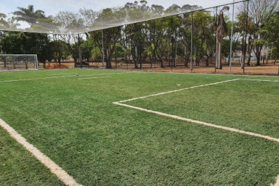
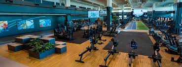
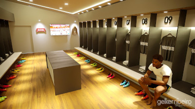

Seja bem-vindo
O ASHCLIN F.C. conta com uma estrutura de ponta, sempre buscando oferecer o que há de melhor aos seus atletas.
Estrutura do clube
Contamos com o apoio de nossos patrocinadores e sócios para manter uma essa mega estrutura, aonde todos podem acompanhar os jogos, como também tem um centro de lazer pra toda a família.
CAMPO
Contamos com uma quadra de grama sintética, desenvolvida na Alemanha, visando a alta performance dos atletas, e com amortecimento de alta tecnologia, assim diminuindo o risco de lesão dos atletas

ACADEMIA
Para manter também nosso atletas em alto nível contamos com uma ampla academia, juntamente com um centro de recuperação com equipamentos de ponta.

VESTIÁRIO
Nada como um vestiário acolhedor e imponente, para a concentração antes do jogo.
O vestiário conta com foto das famílias dos atletas, atletas que já fizeram parte do clube, e uma mesa tática digital, para recebimento das instruções do treinador.
